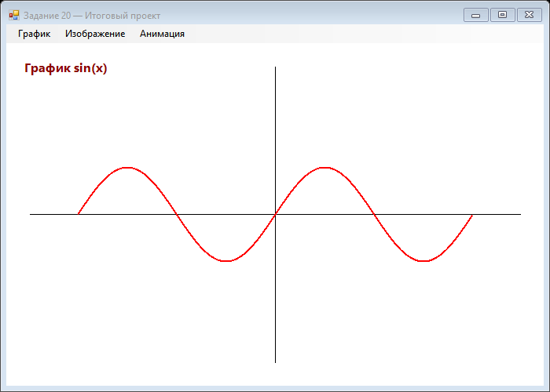

Урок 6.5: Итоговый проект
Планирование проекта
Создайте полноценное графическое приложение, демонстрирующее все изученные техники:
- Выберите тип приложения (графический редактор, визуализатор данных, игра, генератор изображений)
- Определите функциональность
- Спланируйте архитектуру
- Создайте список задач
Реализация
При реализации используйте:
- GDI+ для рисования
- Двойную буферизацию для плавности
- Оптимизацию перерисовки
- Обработку событий мыши и клавиатуры
- Анимацию и трансформации
Оптимизация
- Профилируйте производительность
- Устраните узкие места
- Оптимизируйте использование памяти
- Обеспечьте стабильные 60 FPS
Презентация результата
Подготовьте:
- Демонстрацию функциональности
- Описание использованных техник
- Скриншоты или видео
- Исходный код с комментариями
Примеры проектов
- Графический редактор: Рисование, фильтры, слои
- Визуализатор данных: Графики, диаграммы, интерактивность
- Генератор фракталов: Множество Мандельброта с zoom и pan
- Игра: 2D игра с графикой на GDI+
📝 Пример задания — итоговый проект с меню
Форма с MenuStrip переключает три панели: график, изображение и анимацию. Таймер 50 мс обеспечивает движение и вращение в режиме анимации:
using System;
using System.Collections.Generic;
using System.Drawing;
using System.Drawing.Drawing2D;
using System.Windows.Forms;
namespace CSharpGraphicsApp
{
public class DoubleBufferedPanel : Panel
{
public DoubleBufferedPanel() { DoubleBuffered = true; }
}
public class Task20_FinalProject : Form
{
private readonly Panel graphPanel;
private readonly Panel imagePanel;
private readonly Panel animPanel;
private readonly Timer animTimer = new Timer();
private float animAngle = 0;
private int animX = 0;
public Task20_FinalProject()
{
Text = "Задание 20 — Итоговый проект";
Size = new Size(700, 500);
BackColor = Color.White;
var menu = new MenuStrip();
var mGraph = new ToolStripMenuItem("График");
var mImage = new ToolStripMenuItem("Изображение");
var mAnim = new ToolStripMenuItem("Анимация");
mGraph.Click += (s, e) => ShowPanel(graphPanel);
mImage.Click += (s, e) => ShowPanel(imagePanel);
mAnim.Click += (s, e) => ShowPanel(animPanel);
menu.Items.AddRange(new ToolStripItem[] { mGraph, mImage, mAnim });
MainMenuStrip = menu;
Controls.Add(menu);
graphPanel = CreateGraphPanel();
imagePanel = CreateImagePanel();
animPanel = CreateAnimPanel();
graphPanel.Location = imagePanel.Location = animPanel.Location
= new Point(0, menu.Height);
Controls.Add(graphPanel);
Controls.Add(imagePanel);
Controls.Add(animPanel);
ShowPanel(graphPanel);
animTimer.Interval = 50;
animTimer.Tick += AnimTimer_Tick;
animTimer.Start();
Resize += (s, e) => ResizePanels(menu.Height);
FormClosed += (s, e) => animTimer.Stop();
ResizePanels(menu.Height);
}
private void ResizePanels(int top)
{
var size = new Size(ClientSize.Width, ClientSize.Height - top);
graphPanel.Size = imagePanel.Size = animPanel.Size = size;
}
private void ShowPanel(Panel panel)
{
graphPanel.Visible = imagePanel.Visible = animPanel.Visible = false;
panel.Visible = true;
panel.Invalidate();
}
private Panel CreateGraphPanel()
{
var p = new DoubleBufferedPanel { BackColor = Color.White };
p.Paint += (s, e) =>
{
var g = e.Graphics;
int oy = p.ClientSize.Height / 2;
int ox = p.ClientSize.Width / 2;
g.DrawLine(Pens.Black, 30, oy, p.ClientSize.Width - 30, oy);
g.DrawLine(Pens.Black, ox, 30, ox, p.ClientSize.Height - 30);
var pts = new List<PointF>();
for (float x = -(float)Math.PI * 2; x <= Math.PI * 2; x += 0.05f)
{
float y = (float)Math.Sin(x);
pts.Add(new PointF(ox + x * 40, oy - y * 60));
}
using (var pen = new Pen(Color.Red, 2))
g.DrawLines(pen, pts.ToArray());
g.DrawString("График sin(x)",
new Font("Segoe UI", 12, FontStyle.Bold), Brushes.DarkRed, 20, 20);
};
return p;
}
private Panel CreateImagePanel()
{
var p = new DoubleBufferedPanel { BackColor = Color.White };
p.Paint += (s, e) =>
{
var g = e.Graphics;
var rect = new Rectangle(50, 50, 200, 120);
using (var lgb = new LinearGradientBrush(rect, Color.Blue, Color.Yellow, 45f))
g.FillRectangle(lgb, rect);
var tex = new Bitmap(32, 32);
using (var tg = Graphics.FromImage(tex))
{
tg.Clear(Color.LightGray);
tg.DrawLine(Pens.DarkGray, 0, 0, 32, 32);
tg.DrawLine(Pens.DarkGray, 32, 0, 0, 32);
}
using (var tb = new TextureBrush(tex))
g.FillEllipse(tb, 300, 50, 180, 100);
g.DrawString("Градиент + Текстура",
new Font("Segoe UI", 12, FontStyle.Bold), Brushes.Black, 20, 20);
};
return p;
}
private Panel CreateAnimPanel()
{
var p = new DoubleBufferedPanel { BackColor = Color.White };
p.Paint += (s, e) =>
{
var g = e.Graphics;
g.SmoothingMode = SmoothingMode.AntiAlias;
g.FillEllipse(Brushes.Orange, animX, 100, 40, 40);
g.TranslateTransform(300, 200);
g.RotateTransform(animAngle);
using (var brush = new SolidBrush(Color.FromArgb(120, Color.Green)))
g.FillRectangle(brush, -30, -20, 60, 40);
g.ResetTransform();
g.DrawString("Анимация: движение + вращение",
new Font("Segoe UI", 12, FontStyle.Bold), Brushes.Black, 20, 20);
};
return p;
}
private void AnimTimer_Tick(object sender, EventArgs e)
{
animAngle += 4;
animX += 4;
if (animX > ClientSize.Width) animX = -40;
animPanel.Invalidate();
}
}
}Практическое задание
Задание: Итоговый проект
- Выберите тип приложения (графический редактор, визуализатор данных, игра)
- Спланируйте архитектуру
- Реализуйте функциональность
- Оптимизируйте производительность
- Подготовьте презентацию результата
Задание по аналогии: Многопанельное приложение
По аналогии с Task20_FinalProject создайте форму с меню и тремя режимами отображения.
- Добавьте
MenuStripс пунктами "График", "Изображение", "Анимация". В обработчике каждого пункта вызывайте методShowPanel(panel). - Создайте три панели типа
DoubleBufferedPanel(наследникPanelсDoubleBuffered = true). Каждая панель имеет свой обработчикPaint. - В панели «График» нарисуйте оси и синусоиду (или другую функцию) через
DrawLinesи списокPointF. - В панели «Изображение» показывайте
LinearGradientBrushиTextureBrushна разных фигурах. - В панели «Анимация» запустите
Timerс Interval = 50 мс, обновляйтеanimAngleиanimX, рисуйте движущийся шар и вращающийся прямоугольник.
Пример результата выполнения задания:

Скриншот программы (Task20)
💡 Совет: При переключении панелей скрывайте все три (
Visible = false), затем показывайте только нужную и вызывайте Invalidate(). Остановите таймер при закрытии формы через FormClosed.
Проверка знаний
Ответьте на вопросы, чтобы проверить, насколько хорошо вы усвоили материал:
1. Усвоили ли вы основные концепции урока?
2. Готовы ли вы применить изученное на практике?
3. Что важно при планировании проекта?